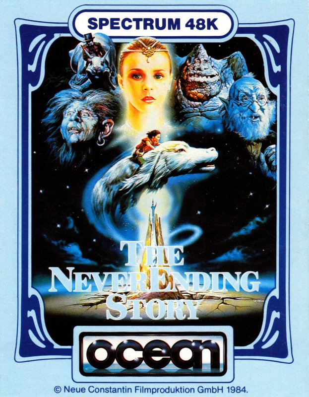
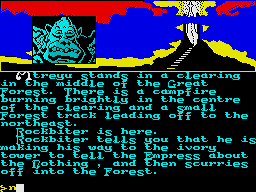

The Never Ending Story


{kind=link}

| Publisher: | Ocean |
| Price: | £9.95 |
| Year: | 1985 |
| Source: | CRASH, Issue 26 |
'A boy who needs a friend finds a world that needs a hero'. So goes the caption at the top of this story which follows the theme of the film about Bastian Balthazar Bux, a boy who discovers a dusty old book on the shelves of an antique bookshop. The book is titled 'The Never Ending Story' and chronicles the ever changing fortunes of the people of Fantasia. Bastian takes the book and, blowing the dust from its jacket, reveals the cover depicting Auryn, a silver and gold medallion symbolizing the strength of Fantasia. On reaching school he avoids his teachers, climbs into an abandoned attic and settling himself down on an old rug begins to become absorbed in this compelling tale.

Their Empress is weak and the peoples of Fantasia are badly in need of a hero. Cairon the physician tells them of a small boy, Atreyu, who is the only person who can find the saviour of Fantasia. You take on the role of the hero Atreyu. Only through your endeavours can the kingdom be restored to its former glory.
The main characters are familiar from the film. The three travellers, Rockbiter, Teeny weeny, and Nighthob are on their way to see the eternal, ever youthful, Empress ruler of Fantasia at the very top of the Ivory Tower. Gmork the Werewolf, the main servant of the dreaded nothing, will range all his powers against you, the one person who can stop his master from destroying Fantasia. Morla, the Ancient One, is an enormous earth-covered tortoise who lives in the Swamps of Sadness. Two animals are of particular importance to Atreyu. Artax is the faithful steed of Atreyu while Falkor, the huge white Luckdragon, will lend assistance to anyone who carries Auryn.
Never Ending Story is an unusual adventure in that it comes on two cassettes with a pre-game side to be loaded be fore the games proper. Each of the three games has a different backdrop along the top of the screen onto which token graphics are placed to represent the objects you are carrying and the companion who accompanies you. Confirmation also lies in the text of the location description and inventory. Up to five objects can be carried at one time and they are displayed at the top right-hand corner of the screen, Any companion, such as Falkor or Atrax, who is with you will have their picture appear at the bottom of the object display area. Larger illustrations for locations or events appear in the top left. Breaking the screen up in this way is rather novel and certainly works well.
Never Ending Story is a very professional piece of software with really good looks. The pictures that represent the different locations, objects and characters are of a very high quality. It's debatable whether the game would really have needed so many parts were it not for the inefficient programming. Also, some location descriptions partly scroll off before you've had a chance to read them — very irritating and unnecessary, and the input has a tendency to 'auto-repeat'. The lack of an EXAMINE command is quite a serious omission, as without such a command a game lacks depth. At the crystal/telescope problem a powerful EXAMINE command would have been extremely useful and would have added to the player's enjoyment and sense of participation in the game. Taking the first game as an example, there don't appear to be too many problems to solve; three to be exact. Apart from the crystal/telescope problem I can only recall how to get past the thorn bush, and how to get pass the multi-coloured desert. However the game is good fun to play and the solutions to the problems are logical and reasonable enough. All in all an enjoyable romp through the fantastical world of Fantasia.
COMMENTS
| Difficulty: | Not so difficult |
| Graphics: | Very good |
| Presentation: | Very pleasant |
| Input facility: | Verb/noun |
| Response: | Fast |
| General rating: | Well worth playing |
| Atmosphere: | 7 |
| Vocabulary: | 7 |
| Logic: | 8 |
| Addictive Quality: | 8 |
| Overall: | 7 |